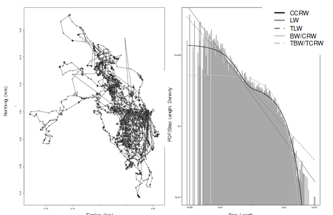
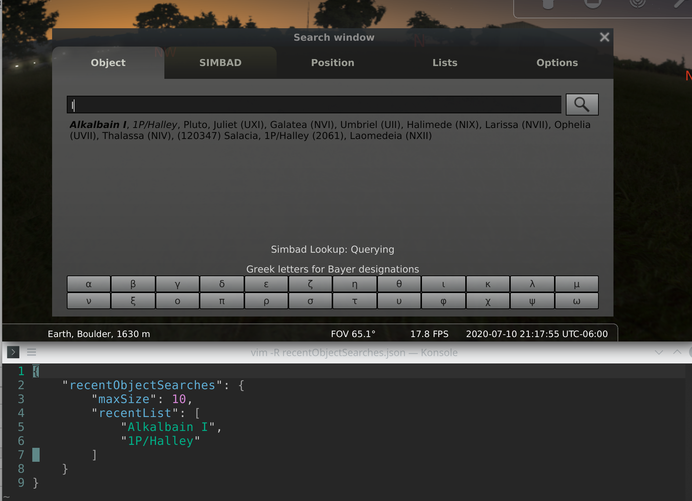
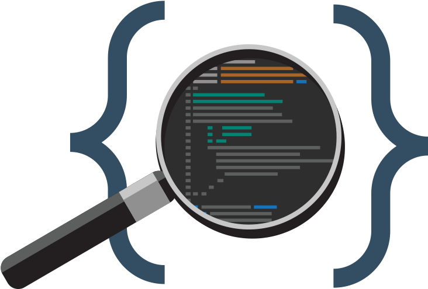

I'm a computer science master's student at the University of Colorado Boulder. My undergraduate degrees were in chemistry and biology.
My interest in programming sparked while working as an analytical chemist. I was drawn towards the software and database management system that were involved.
I am interested in effectively solving problems on a large dataset by collecting, analyzing and interpreting them. My courses are currently geared towards data science, machine learning, computational biology and natural language processing.
Computer Science
University of Colorado Boulder
Chemistry | Biology
University of Colorado Denver
Random Search Strategies In Herbivores, Carnivores, and Omnivores


Let binding:
let (identifier x)
=(defining value) in (body expression)let x = 2 in (4 + x)
= 6

Created by BLACKTIE.CO